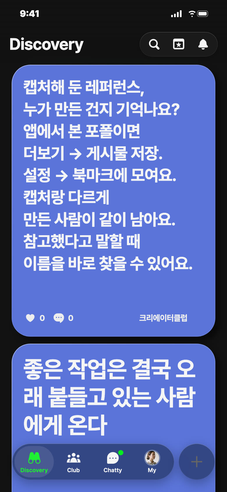
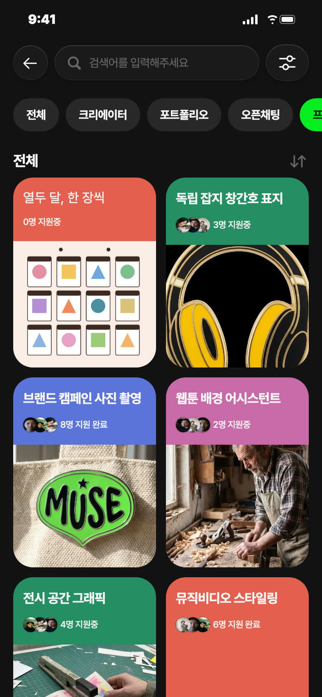
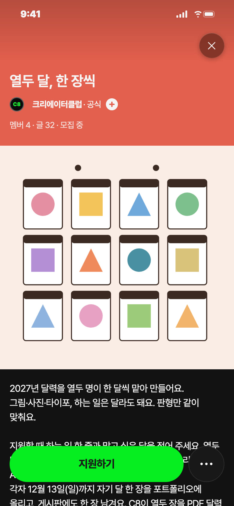
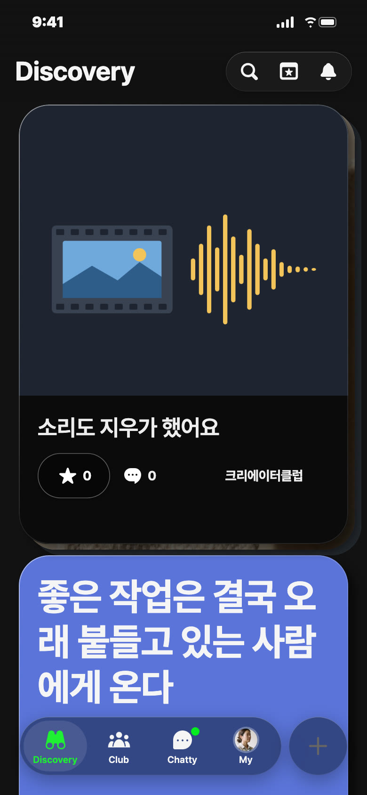
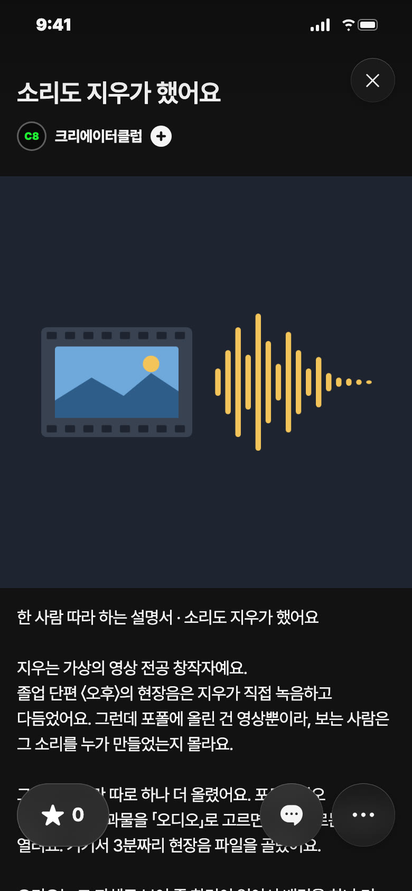

오늘 추천은 영감 한 장이에요. 프로젝트·포트폴리오는 비축이에요.
날짜·인물·지원 채팅·댓글은 제안 또는 가상 예시예요. 실제 모집·게시·멘션은 하지 않았어요. 주변 카드·회원 사진은 디자인 원본의 예시예요.
C8 앱 게시 시안 · 2026. 11. 22. 일요일 · 오늘 추천 영감

왜 오늘: 일요일 밤, 다음 주 작업 레퍼런스를 모으기 전 — 이럴 때 이 기능(게시물 저장·북마크).
보낼 사람: 레퍼런스 캡처로 사진첩 꽉 찬 동기에게 「캡처 말고 이거」
받고 싶은 댓글: 예시·가상: 캡처한 포스터 작가 찾다가 포기했는데, 이제 저장부터 해요.
참고: 배경색은 앱이 무작위로 정해요. 시안 색은 예시.
캡처해 둔 레퍼런스, 누가 만든 건지 기억나요? 앱에서 본 포폴이면 더보기 → 게시물 저장. 설정 → 북마크에 모여요. 캡처랑 다르게 만든 사람이 같이 남아요. 참고했다고 말할 때 이름을 바로 찾을 수 있어요.


왜 지금: 연말, 날짜가 있는 결과물 하나를 같이 만드는 판(11/8 ★5 졸업전시 결: 지금 시기·날짜).
보낼 사람: 타이포 하는 동기에게 「너 12월 맡아, 나 1월 할게」
받고 싶은 지원 채팅: 예시·가상: 사진 찍어요. 눈 오는 1월 맡고 싶어요.
게시 전: 수락·PDF 묶을 운영자, 26.46.0 출시 확인.
열두 달, 한 장씩
2027년 달력의 한 달을 맡을 창작자 열두 명을 찾아요. 하는 일 한 줄과 맡고 싶은 달을 적어 주세요. 12/13(일)까지 한 장, 판형은 세로 A5예요.
2027년 달력을 열두 명이 한 달씩 맡아 만들어요. 그림·사진·타이포, 하는 일은 달라도 돼요. 판형만 같이 맞춰요. 지원할 때 하는 일 한 줄과 맡고 싶은 달을 적어 주세요. 열두 명을 수락하면 게시판에 달마다 누가 맡았는지 올리고, 세로 A5 판형 파일은 자료실에 둘게요. 각자 12월 13일(일)까지 자기 달 한 장을 포트폴리오에 올리고, 게시판에도 한 장 남겨요. C8이 열두 장을 PDF 달력 하나로 묶어 12월 20일(일)에 포트폴리오로 올리고, 맡은 사람을 모두 @로 적을게요. 지원은 12월 6일(일)까지예요. 상품은 없고, 인쇄는 원하는 사람만 각자 해요. 내년엔 달을 넘길 때마다, 다른 사람 작업이 나와요.


왜 지금: 영상 포폴만 있으면 소리 작업은 안 보여요 — 오디오 결과물 기능 하나.
보낼 사람: 단편 사운드 맡았던 동기에게 「너 소리도 따로 올려」
받고 싶은 댓글: 예시·가상: 폴리 녹음한 거 묵혀 뒀는데 이걸로 올려야겠어요.
확인 범위: iOS 코드 결과물 「오디오」·배경 안내 문구. 실기기 화면은 나나 확인 전.
소리도 지우가 했어요
한 사람 따라 하는 설명서 · 소리도 지우가 했어요 지우는 가상의 영상 전공 창작자예요. 졸업 단편 〈오후〉의 현장음은 지우가 직접 녹음하고 다듬었어요. 그런데 포폴에 올린 건 영상뿐이라, 보는 사람은 그 소리를 누가 만들었는지 몰라요. 그래서 소리만 따로 하나 더 올렸어요. 포트폴리오 올리기에서 결과물을 「오디오」로 고르면 파일 고르는 화면이 열려요. 거기서 3분짜리 현장음 파일을 골랐어요. 오디오는 그 자체로 보여 줄 화면이 없어서 배경을 하나 더 고르라고 나와요. 안내에도 「오디오의 배경으로 사용돼요」라고 적혀 있어요. 설명엔 쓴 마이크와 녹음한 장소를 한 줄씩 적었어요. 〈오후〉와 파일 이름·길이는 지어낸 예시예요. 이제 지우 포폴에선 영상을 안 켜도, 그 소리부터 들을 수 있어요.
설명서 사진 원본 두 장
사진 포트폴리오에 아래 두 장을 순서대로 붙여요.


근거
영감: 남의 포트폴리오 더보기 「게시물 저장」, 저장하면 「포트폴리오를 저장했어요.」와 「북마크 보기」, 설정 → 북마크의 크리에이터·포트폴리오 탭(iOS OtherFeedBottomSheetActionType·FeedDetailViewModel·SettingListViewModel, 11/13 기준 코드). 영감·프로젝트와 내 포폴은 저장할 수 없어요(자주 묻는 질문 원고).
프로젝트: 날짜는 제안값이에요. 수락·PDF 묶을 운영자와 26.46.0 출시를 게시 전에 확인해요.
포트폴리오: 결과물 「오디오」, 배경 안내 「오디오의 배경으로 사용돼요」(iOS ContentUploadWorkflowOptionPickerViews·ContentUploadPortfolioOutputSectionView). 실기기 화면은 확인 전이에요.